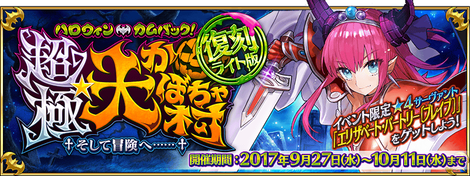
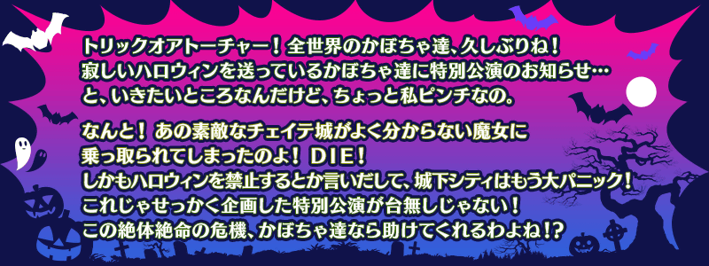
◆活動舉辦期間◆
2017年9月27日(三) 17:00～10月11(三) 11:59
◆活動概要◆
舉辦期間限定活動｢復刻:萬聖節・歸來！ 超極☆大南瓜村 ～接著邁向冒險……～ 輕量版｣！
與勇者伊麗莎白一起到南瓜村冒險的Master。
好不容易到達城內，在前方等待的是……？
本活動的主線關卡為逐日開放。
使用推進道具的話能有利推進關卡。
推進關卡得到｢★4(SR)伊莉莎白・巴托里〔Brave〕｣吧！
※本活動為再調整2016年舉辦的期間限定活動｢萬聖節・歸來！ 超極☆大南瓜村 ～接著邁向冒險……～｣更容易遊玩的｢復刻輕量版活動｣。
※活動限定Servant｢★4(SR)伊莉莎白・巴托里〔Brave〕｣及活動限定概念禮裝及活動限定概念禮裝與2016年舉辦時同様可以獲得。
◆活動参加條件◆
只限通過｢第一特異點 邪龍百年戰爭 奧爾良｣的Master才能參加
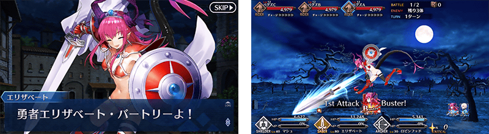

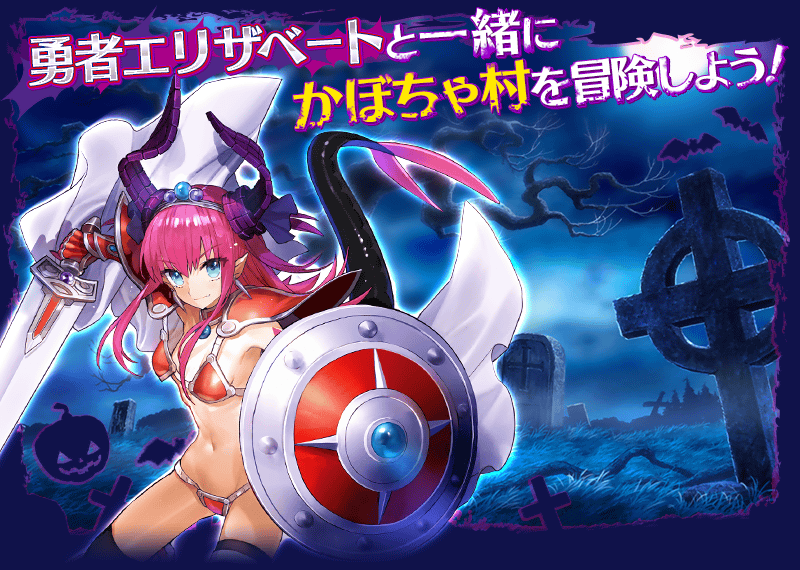
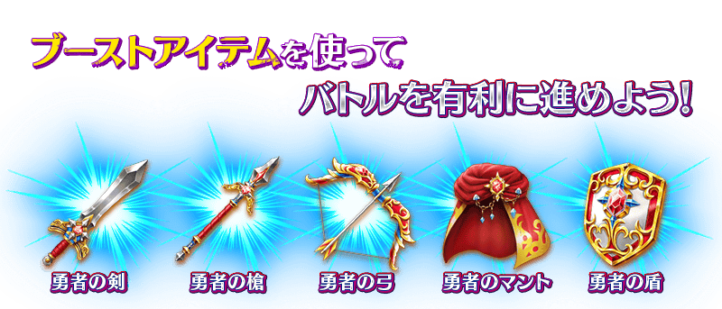
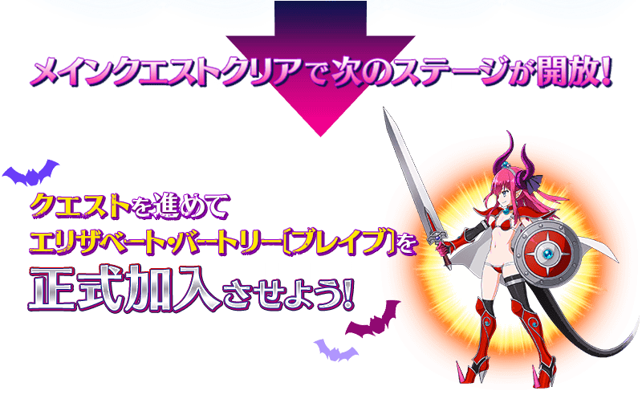
※請注意於2016年舉辦時的期間限定活動｢萬聖節・歸來！ 超極☆大南瓜村 ～接著邁向冒險……～｣入手的活動道具無法沿用。
享受故事的主線關卡將逐日開放。
通過主線關卡後會開放新階段！
在各階段準備了能反覆通過來獲得活動道具的Free關卡。
| 時間表 | |
|---|---|
| 主線關卡 第1天 |
9月27日(三) 17:00～ 10月11日(三) 11:59 |
| 主線關卡 第2天 |
9月28日(四) 23:00～ 10月11日(三) 11:59 |
| 主線關卡 第3天 |
9月29日(五) 23:00～ 10月11日(三) 11:59 |
| 主線關卡 第4天 |
9月30日(六) 23:00～ 10月11日(三) 11:59 |
| 主線關卡 第5天 |
10月1日(日) 23:00～ 10月11日(三) 11:59 |
※在2016年舉辦時獲得「聖杯」的情況，於輕量版復刻活動會以「傳承結晶」代替聖杯做為通過報酬。
在｢復刻:萬聖節・歸來！ 超極☆大南瓜村 ～接著邁向冒險……～ 輕量版｣，通過最後的主線關卡的話，將開放於戰鬥有著隊伍編成限制的挑戰關卡。
編成限制關卡，是男性Servant限定等，限制Servant編成的高難易度關卡。
通過的話除了能提升伊莉莎白・巴托里〔Brave〕的寶具等級外，還能獲得強化素材和傳承結晶。
※支援的Servant也適用編成限制。
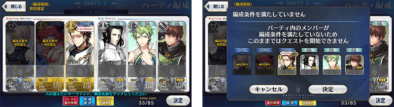
◆超值攻略方法・其1◆
使用能靠活動道具交換和關卡報酬等獲得的推進道具的話，會給予對戰鬥有利的效果。
使用｢勇者の剣｣｢勇者の槍｣｢勇者の弓｣的話，我方全體(含候補)「Buster」「Quick」「Arts」各自的指令卡性能提升。
使用｢勇者のマント｣的話，我方全體(含候補)的寶具威力提升。
使用｢勇者の盾｣的話，給予我方全體(含候補)無敵狀態(3次)。
※請注意無敵的效果無法重複。如果使用｢勇者の盾｣時裝備有無敵效果的概念禮裝，概念禮裝的效果為優先而不給予｢勇者の盾｣的效果。
利用推進道具的效果，有利地推進戰鬥吧！
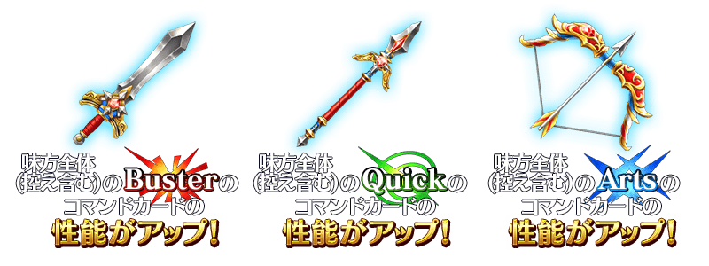
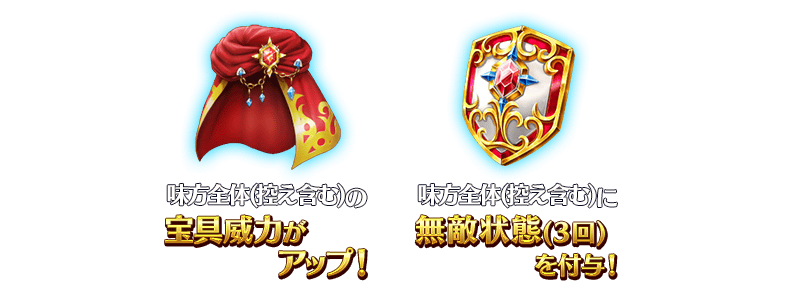
推進道具在關卡開始前，任意選擇１種類消耗。
※推進道具的效果對我方全體＜含候補＞有效，持續到戰鬥結束前。
◆超值攻略方法・其2◆
對象的Servant在｢復刻:萬聖節・歸來！ 超極☆大南瓜村 ～接著邁向冒險……～ 輕量版｣的攻擊威力會提升。
【對象Servant】
| 職階 | 稀有度 | 名稱 |
|---|---|---|
| Assassin | ★★★★★ | |
| Saber | ★★★★ | |
| Lancer | ★★★★ | |
| Caster | ★★★★ | |
| Berserker | ★★★★ | |
| Archer | ★★★ |
※各Servant的增加量不同。
◆超值攻略方法・其3◆
裝備能在活動道具交換入手的活動限定概念禮裝｢勇者エリちゃんの冒険｣｢ウィザード＆プリースト｣｢マタ･ハリの酒場｣的話，掉落活動専用道具的敵人追加出現率會提升。
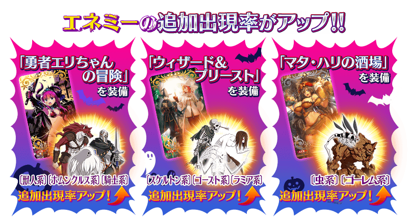
◆超值攻略方法・其4◆
裝備期間限定概念禮裝的話，活動専用道具｢金のズダ袋｣｢銀のズダ袋｣｢銅のズダ袋｣各自的獲得數會提升。
※請注意在各關卡的道具掉落率並非100％。
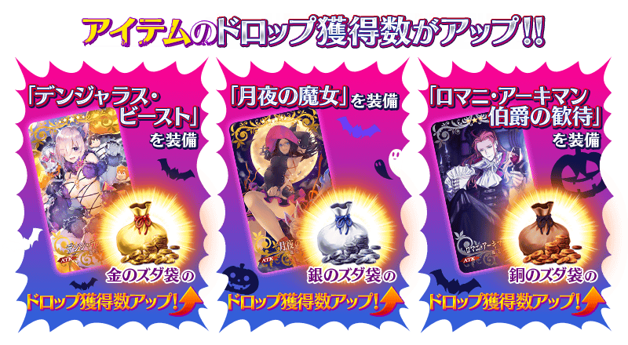
 |
★★★★★SSR |

| 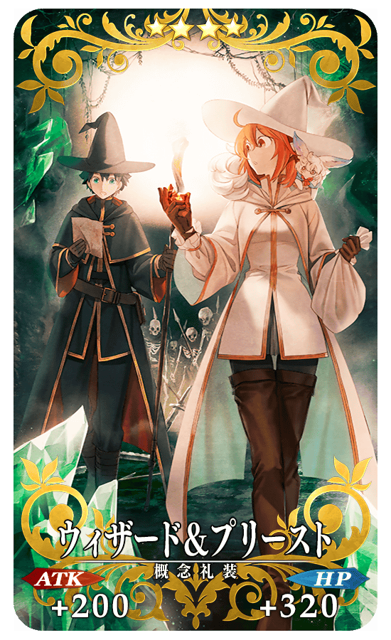 |
★★★★SR |
| 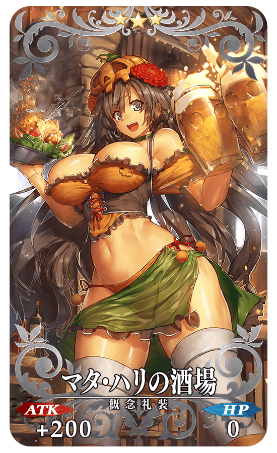 |
★★★R |
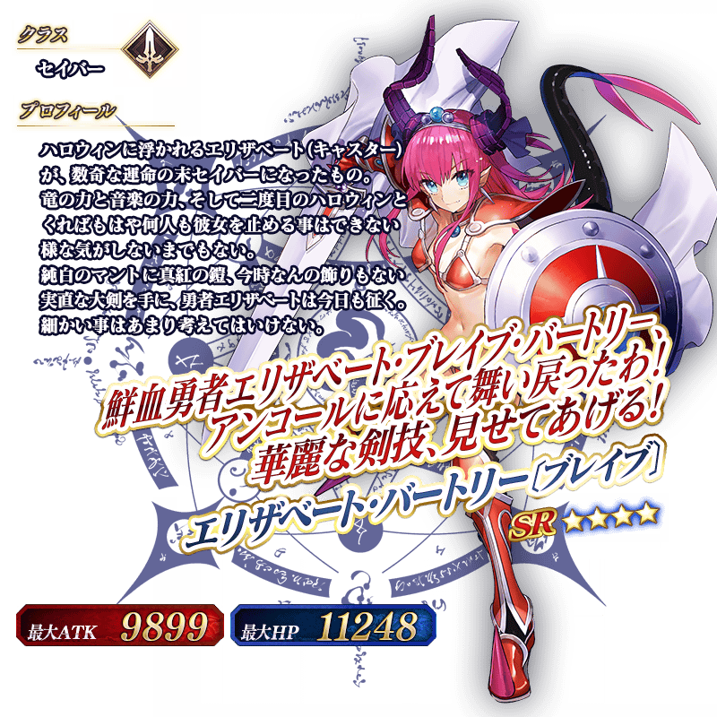
◆靈基再臨◆
使用除了在活動道具交換外無法入手的「龍之寶玉(竜のオーブ)」，重複4次靈基再臨的話，卡面會有所變化！
※伊莉莎白・巴托里〔Brave〕不會隨靈基再臨使戰鬥角色的外觀變化。
◆交換方法◆
交換期間:2017年9月27日(三) 17:00～10月18日(三) 11:59まで
※交換期間結束後｢金のズダ袋｣｢銀のズダ袋｣｢銅のズダ袋｣｢勇者の剣｣｢勇者の槍｣｢勇者の弓｣｢勇者のマント｣｢勇者の盾｣會消失。
從達文西工房内的「活動道具交換」，可用活動專用道具來交換以下的道具。
※英靈結晶・流星之芙芙ALL★4(HP)及英靈結晶・日輪之芙芙ALL★4(ATK)會在通過｢復刻:萬聖節・歸來！ 超極☆大南瓜村 ～接著邁向冒險……～ 輕量版｣的主線關卡後開放。
◆能用金のズダ袋交換的道具◆
|
【活動限定概念禮裝】 【活動限定靈基再臨素材】 【技能強化素材】 【技能強化＆靈基再臨素材】 【靈基再臨素材】 【其他道具】 |
◆能用銀のズダ袋交換的道具◆
|
【活動限定概念禮裝】 【活動限定靈基再臨素材】 【技能強化＆靈基再臨素材】 【靈基再臨素材】 【其他道具】 |
◆能用銅のズダ袋交換的道具◆
|
【活動限定概念禮裝】 【活動限定靈基再臨素材】 【技能強化＆靈基再臨素材】 【其他道具】 |
◆能用勇者の剣・勇者の槍・勇者の弓・勇者のマント・勇者の盾交換的道具◆
※活動舉辦期間結束後才能交換。
| 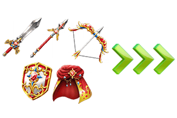 |
【其他道具】 |

以通過｢復刻:萬聖節・歸來！ 超極☆大南瓜村 ～接著邁向冒險……～ 輕量版｣的一部份編成限制關卡及｢終局特異點｣的Master為對象開放高難易度關卡「挑戰關卡」。
挑戰關卡就算在通過後也不會消失，能無數次挑戦，可以變更Servant和概念禮裝的組合後再次挑戰。
※關卡通過報酬、戰利品、MasterEXP、魔術禮裝EXP、絆點數只限在初次通過時獲得。
◆挑戰關卡參加條件◆
只限通過｢復刻:萬聖節・歸來！ 超極☆大南瓜村 ～接著邁向冒險……～ 輕量版｣的一部份編成限制關卡及｢終局特異點｣的Master才能參加
◆挑戰關卡初次通過報酬◆
傳承結晶 1個
◆｢復刻 萬聖節2016Pick Up召喚(每日交替)｣期間◆
期間:2017年9月27日(三) 17:00～10月11日(三) 11:59
舉辦期間限定｢復刻 萬聖節2016Pick Up召喚(每日交替)｣！
｢★5(SSR)克麗奧佩脫拉｣以期間限定登場！
本次為｢★5(SSR)克麗奧佩脫拉｣與｢★3(R)羅賓漢｣的2位常駐Pick Up！
另外，於｢復刻:萬聖節・歸來！ 超極☆大南瓜村 ～接著邁向冒險……～ 輕量版｣活躍的｢★4(SR)弗拉德三世〔EXTRA〕｣｢★4(SR)尼托克里絲(Caster)｣｢★4(SR)茨木童子｣以每日交替Pick Up！
詳情請在聖晶石召喚畫面左下的召喚詳細確認。
※克麗奧佩脫拉在Pick Up期間結束後，不會追加到故事召喚。
變更在2016年舉辦的｢萬聖節2016Pick Up召喚｣一部份内容進行復刻。
裝備期間限定概念禮裝｢★5(SSR)デンジャラス・ビースト｣｢★4(SR)月夜の魔女｣｢★3(R)ロマニ・アーキマン伯爵の歓待｣的話活動専用道具的掉落獲得數會提升。
※｢★3(R)ロマニ・アーキマン伯爵の歓待｣在Pick Up期間中，也能在友情點數召喚獲得。
Pick Up期間中，期間限定Servant、Pick Up Servant、期間限定概念禮裝的出現機率提升！
10次召喚中確定1張★4(SR)以上和確定1位★3(R)以上的Servant！
※確定★4(SR)以上包含Servant和概念禮裝。
※所謂「出現機率提升」意指比同稀有度的Servant及概念禮裝出現機率更高的設定。
| 每日交替Pick Up期間 | 每日交替Pick Up內容 |
|---|---|
| 9月27日(三) 17:00～ 10月1日(日) 22:59 |
克麗奧佩脫拉 弗拉德三世〔EXTRA〕 尼托克里絲(Caster) 茨木童子 羅賓漢 |
| 10月1日(日) 23:00～ 10月3日(二) 22:59 |
克麗奧佩脫拉 弗拉德三世〔EXTRA〕 羅賓漢 |
| 10月3日(二) 23:00～ 10月5日(四) 22:59 |
克麗奧佩脫拉 尼托克里絲(Caster) 羅賓漢 |
| 10月5日(四) 23:00～ 10月7日(六) 22:59 |
克麗奧佩脫拉 茨木童子 羅賓漢 |
| 10月7日(六) 23:00～ 10月11日(三) 11:59 |
克麗奧佩脫拉 弗拉德三世〔EXTRA〕 尼托克里絲(Caster) 茨木童子 羅賓漢 |
※請注意會以每日交替變更Pick Up的Servant。
介紹克麗奧佩脫拉的寶具演出！
在Fate/Grand Order官方網站內的公告中，公開了｢★5(SSR)克麗奧佩脫拉｣的寶具演出。敬請確認。
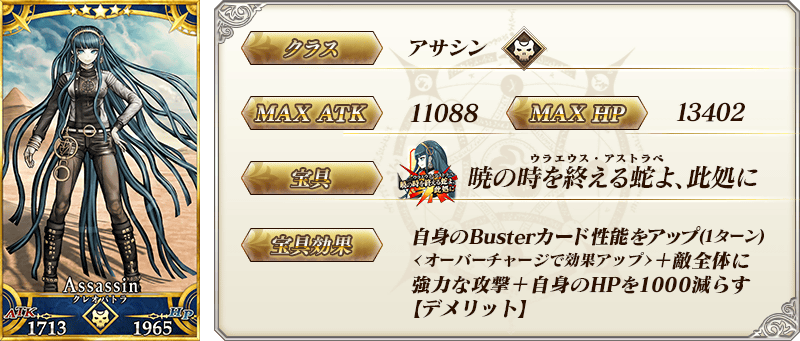

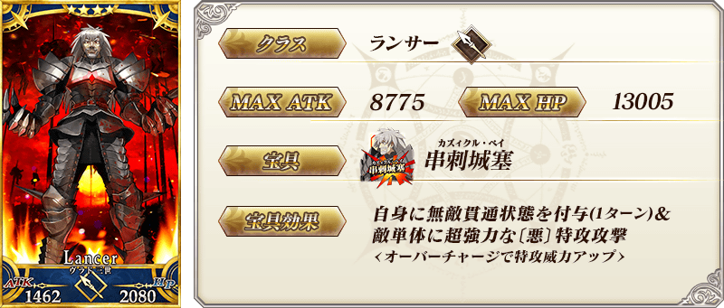
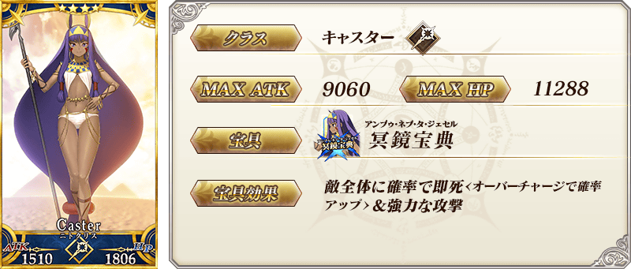


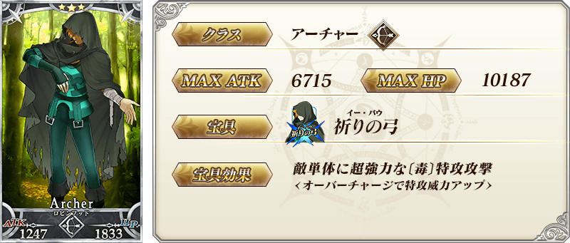
| 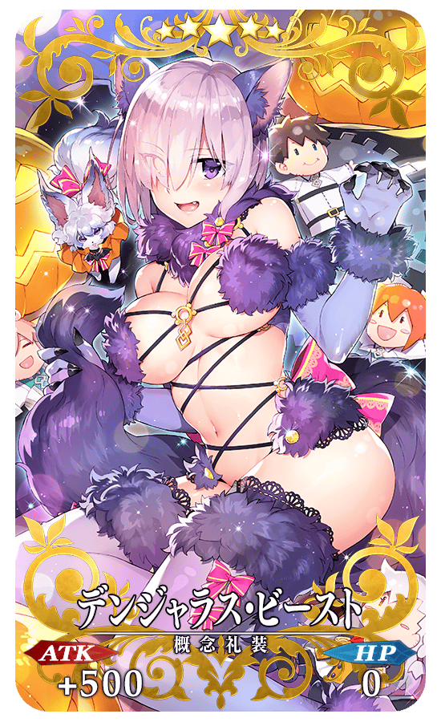 |
★★★★★SSR |
| 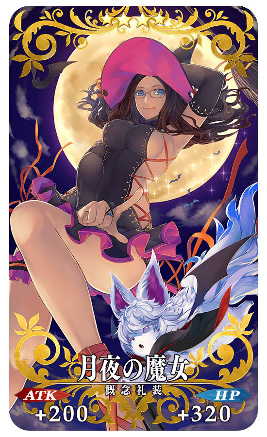 |
★★★★SR |
| 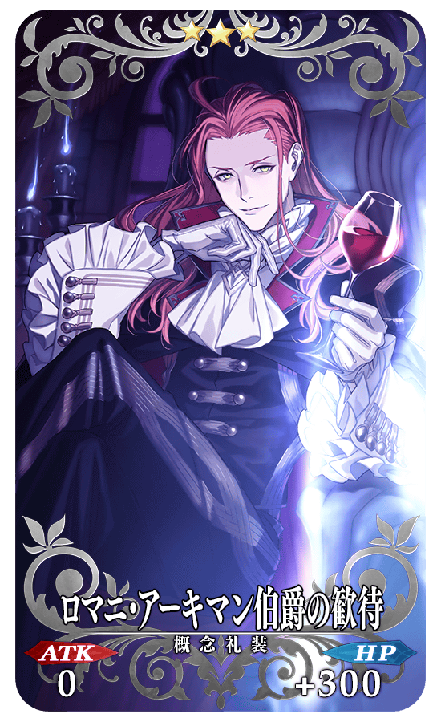 |
★★★R |
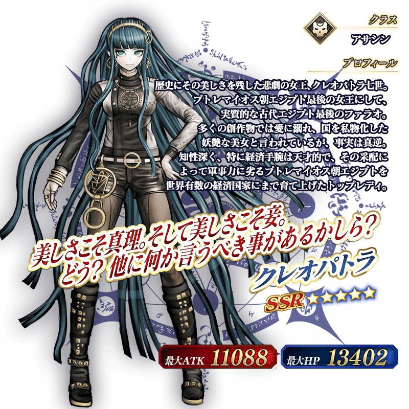